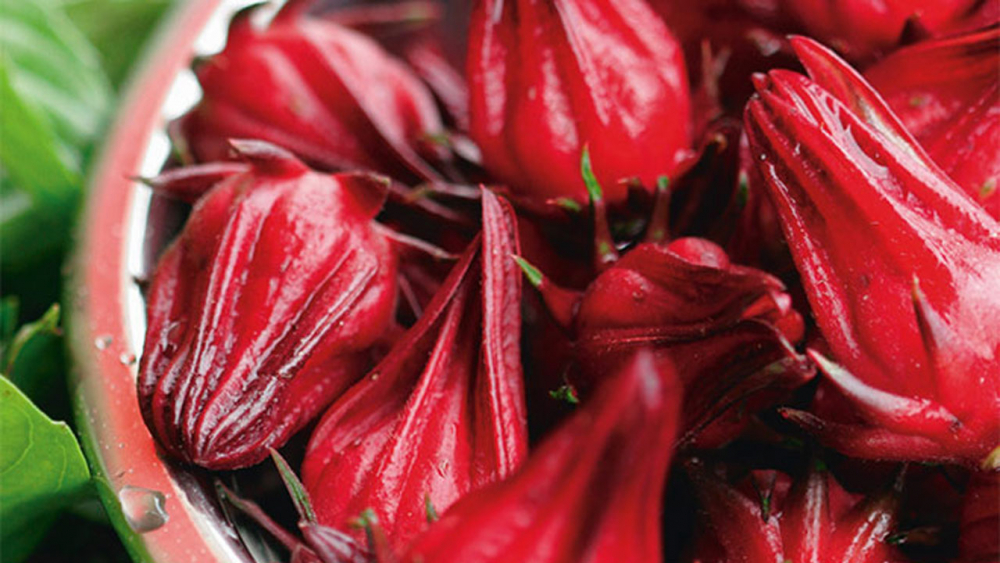

กระเจี๊ยบแดง
ไม้ล้มลุก ลักษณะลำต้นเป็นทรงพุ่ม อายุปีเดียว สูงประมาณ 1 – 2 เมตร ขนาดลำต้นประมาณ 1 - 2 ซม. แตกกิ่งก้านมากมายตั้งแต่โคนต้น เปลือกต้นเรียบ ต้นอ่อนมีสีเขียว เมื่อแก่ลำต้นและกิ่งก้านสีแดงเข้มหรือสีแดงอมม่วง เปลือกลำต้นบางเรียบ สามารถลอกเป็นเส้นได้
ใบ เป็นใบเดี่ยว ออกเรียงสลับตามความสูงของกิ่ง ลักษณะใบรูปสี่เหลี่ยมข้าวหลามตัด ยาวประมาณ 7 - 13 ซม. มีขนปกคลุมทั้งด้านบนด้านล่าง ขอบใบเป็นแฉกคล้ายนิ้วมือ 3 นิ้ว หรือเป็น 5 แฉก ระยะห่างระหว่างแฉก 0.5 - 3 ซม. ลึกประมาณ 3 - 8 ซม. มีหูใบเป็นเส้นเรียวยาว 0.8 - 1.5 ซม. โคนใบสอบเรียว ปลายใบแหลมหรือเรียวแหลม โคนใบมน แต่ละแฉกมีรูปใบหอก ขอบใบเป็นจักฟันเลื่อย มีเส้นใบ 3 – 7 เส้น สีแดง ใบด้านล่างนูนเด่น โคนเส้นกลางใบด้านท้องใบมีต่อม 1 ต่อม แผ่นใบสีเขียวเกลี้ยง ก้านใบยาว 4 – 15 ซม. มีขนรูปดาวปกคลุม ใบที่มีอายุน้อย และใบใกล้ดอกจะมีขนาดเล็กรูปไข่
ดอกเป็นดอกเดี่ยว ดอกแทงออกตามซอกใบตั้งแต่โคนกิ่งถึงปลายกิ่ง ดอกมีก้านดอกสั้น สีแดงม่วง ดอกมีกลีบเลี้ยง ประมาณ 5 กลีบ หุ้มดอกบนสุด มีขนาดใหญ่ มีลักษณะอวบหนา มีสีแดงเข้มหุ้มดอก และกลีบรองดอก ที่เป็นกลีบด้านล่างสุด มีขนาดเล็ก 8 - 12 กลีบ มีสีแดงเข้ม กลีบทั้ง 2 ชนิดนี้ จะติดอยู่กับดอกจนถึงติดผล และผลแก่ ไม่มีร่วง ดอกเมื่อบานจะมีกลีบดอกสีเหลืองหรือสีชมพูอ่อนหรือสีขาวแกมชมพู บริเวณกลางดอกมีสีเข้ม ส่วนของดอกมีสีจางลง เมื่อดอกแก่กลีบดอกจะร่วง ทำให้กลีบรองดอก และกลีบเลี้ยงเจริญขึ้นมาหุ้ม เกสรเพศผู้จำนวนมาก
ผล เจริญจากดอก เป็นผลแห้งแตกได้ ลักษณะรูปรีปลายแหลมหรือรูปไข่ ยาวประมาณ 2.5 ซม. มีจงอยสั้นๆ มีจีบตามยาว และถูกหุ้มด้วยกลีบเลี้ยงสีแดงเข้ม ติดทนขนาดใหญ่รองรับอยู่จนผลแก่ มีขนหยาบๆ สีเหลืองปกคลุม
เมล็ด ส่วนในของเมล็ดรูปไตสีน้ำตาลเกลี้ยงจำนวนมาก
ใช้เมล็ดหว่านห่างๆ บนแปลงที่ไถแล้ว หรือปลูกเป็นแถวยาวให้หยอดเมล็ด 3-4 เมล็ดต่อหลุม จากนั้นเมื่อต้นกล้ามีใบจริงสองใบค่อยถอนแยกให้เหลือหลุมละ 2 ต้น เหมาะที่จะปลูกแปลงกลางแจ้ง กรณีบางบ้านมีเนื้อที่จำกัดอาจจะปลูกหรือหว่านในกระถางได้โดยปลูกแค่ 1 ต้นพอแต่ต้นพืชต้องได้รับแสงแดดเพียงพอ
การให้ปุ๋ย ครั้งที่ 1,2 เมื่อต้นพืชอายุได้ 40 วัน , 80 วัน ควรใส่ปุ๋ยหมักหรือปุ๋ยคอกที่ผ่านการหมักแล้ว (ให้สังเกตพืชด้วย การให้น้ำ ควรให้น้ำอย่างสม่ำเสมอ ให้พอเหมาะกับพืชไม่ควรให้แห้งหรือแฉะมากเกินไป (ให้คอยสังเกตที่ดินปลูก)
ดอก ขับปัสสาวะ แก้ขัดเบา
ใบ รสเปรี้ยว ขับเสมหะ ช่วยย่อยอาหาร ทำให้โลหิตไหลเวียนดี ขับปัสสาวะ ขับเมือกในลำไส้ลงสู่ทวารหนัก แก้โรคพยาธิตัวจี๊ด
ยอดและใบ รสเปรี้ยว เป็นยาบำรุงธาตุ ยาระบาย ละลายเสมหะ ขับปัสสาวะ ช่วยย่อยอาหาร หรือต้มชะล้างบาดแผล หรือนำใบมาโขลกให้ละเอียดใบประคบฝี
กลีบเลี้ยง รสเปรี้ยว ขับนิ่วในไต ขับนิ่วในกระเพาะปัสสาวะ ขับเมือกมันให้ลงสู่ทวารหนัก แก้เสมหะ ขับปัสสาวะ ลดไข้ แก้ไอ แก้นิ่ว แก้กระหายน้ำ ละลายไขมันในเส้นเลือด ชงกับน้ำรับประทานเพื่อลดความดัน ลดไขมันในเลือด ทำแยม
ผล รสจืด ลดไขมันในเส้นเลือด รักษาแผลในกระเพาะ แก้กระหายน้ำ บำรุงธาตุ บำรุงร่างกาย และแก้อ่อนเพลีย
เมล็ด รสเมา ยาแก้อ่อนเเพลีย บำรุงกำลัง บำรุงธาตุ แก้ดีพิการ แก้โรคทางเดินปัสสาวะอักเสบ ขับปัสสาวะ ขับน้ำดี ลดไขมันในเส้นเลือด ขับเหงื่อ เป็นยาระบาย และกระตุ้นความรู้สึกทางเพศ
ทั้งห้า รสเปรี้ยว เป็นยาขับเมือกมันให้ลงสู่ทวารหนัก แก้พยาธิตัวจี๊ด
ทั้งต้น เป็นยาฆ่าตัวจี๊ด นำมาใส่หม้อต้ม น้ำ 3 ส่วน เคี่ยวไฟให้งวดเหลือ 1 ส่วน ผสมกับน้ำผึ้งครึ่งหนึ่ง รับประทานวันละ 3 เวลา หรือรับประทานน้ำยาเปล่าๆ จนหมดน้ำยา
เลือกตัดดอกที่มีขนาดใหญ่ก่อน แล้วนำมาคว้านเอาเมล็ดออก ส่วนเนื้อสามารถนำไปตากทำชาหรือแยมกระเจี๊ยบได้ ส่วนเมล็ดให้นำไปตากแดด 3-4 วัน ให้แห้ง